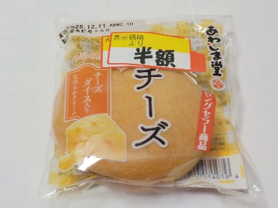
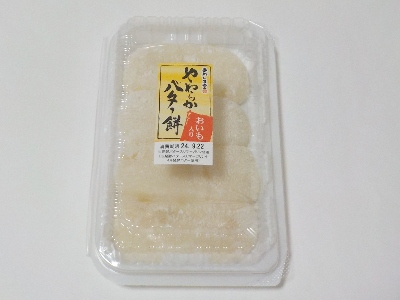
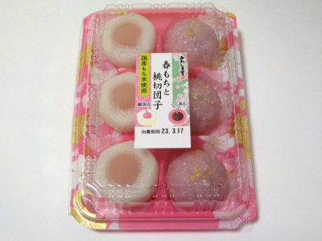
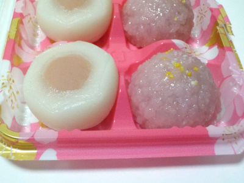
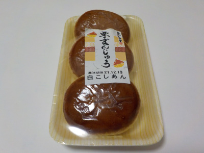

あわしま堂の焼きチーズブッセはマーガリンとチーズクリーム味。
更新日 : 2025/12/11

クリームの入った甘いブッセかなと思ったんですが、マーガリンとチーズ味で塩気がありました。甘さも塩分もコクもあって複雑な味だけど美味しいですね。
マーガリンサンド系のものが好きな人に向いているんだろうなと思いました。
半額で47円でした。
愛媛県八幡浜市保内町川之石1-237-53
更新日 : 2025/12/11

クリームの入った甘いブッセかなと思ったんですが、マーガリンとチーズ味で塩気がありました。甘さも塩分もコクもあって複雑な味だけど美味しいですね。
マーガリンサンド系のものが好きな人に向いているんだろうなと思いました。
半額で47円でした。
更新日 : 2024/09/22

やわらかくてもっちもっちのお餅です。あんまりやわらかいので、お餅とお餅がちょっとくっついていました。
大福のお餅部分（求肥）ぽいですが、それよりも柔らかいです。
あんこみたいな強い甘さはないですが、ふわふわもちもちでマイルドな甘さのスイーツがタッパー1個分楽しめました。
更新日 : 2023/03/17

見た目がいいです。

道明寺に似たかんじの春もちと、団子の中に桃アンが入った桃切団子です。
団子の中に餡が入っているのっていいですね。そんでもって半分に切っているので見た目がカラフルでキレイ。
このタイプの団子がドンドン増えればいいのにって思いました。
地元の和菓子屋さんもこんなの作ってくれないかな。
更新日 : 2021/12/19

栗が入っていなくて、栗の恰好してないタイプの栗まんじゅう。
おまんじゅうの表面が栗みたいにツヤツヤした茶色なので栗饅頭って言うらしいです。（net調べ）
マックスバリューで販売していたものを買いました。
昔からある感じのお菓子って、味が安定してていいですね。期待通りの味でした。
お手頃価格て小さくて食べ易くていいですね。